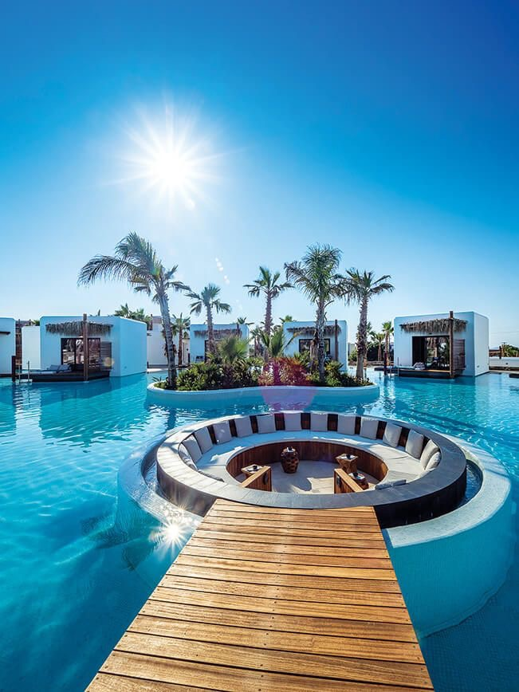
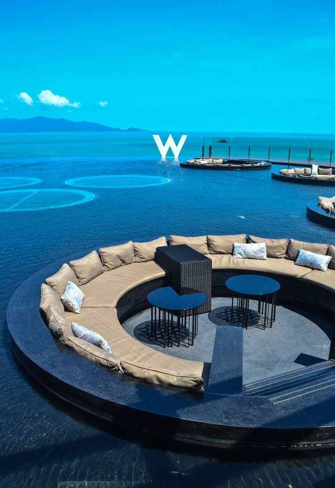
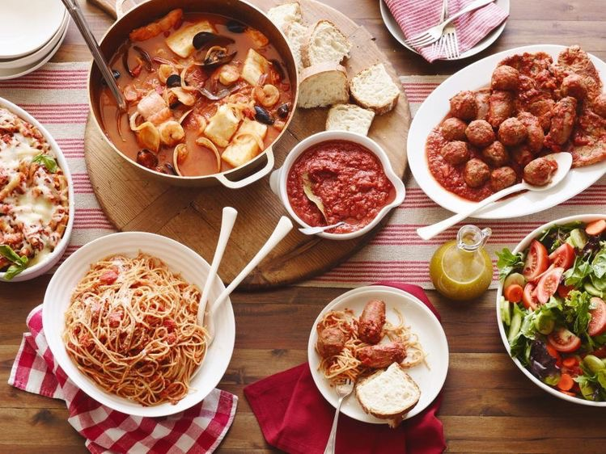

Catering company
As far back as we can remember, we have always liked going out to eat.When deciding where to go to eat, we have three things to think about. we must consider the atmosphere or where we want to go. The amount of time we have is another consideration. The amount of money that we are able to spend is a big influence.As a result people planning to eat at HK they might want to consider making reservations because the wait can take up to two-hours if they do not.
the only disadvantage is that the customers walk up to the counter and gives their order. The food should be ready in the next two minutes. However, if the counter person gets the order wrong, the customers may have to wait longer.
The best restaurant to go to in Nairobi is HK because

comforting smile the employees have on their faces
soft jazz music playing-makes me feel relaxed
The viny plants that clasp to the walls ever so freely give it a natural appearance
The marble tiled floor beneath me gives the restaurant a clean yet warm appearance.
characteristics
the characteristics include

Beautiful appearance
High level of stability and low rolling motion
Low waves generated by the movement of the ship must be as small as possible(low wash displacement craft) in order to minimize the erosion caused by wavewash because the river wall prone to landslides
To have the capacity and dimensions that corresponds to the depth of the river,so that food traders are more empowered and create new jobs
Silent and low vibration
foods being sold
pasta {maccoroni,papparelle,farfalle,shells,campanelle,bucatini,gnocchi}
larzania
garlic bread
pizza
bread sticks wrapped with ham
